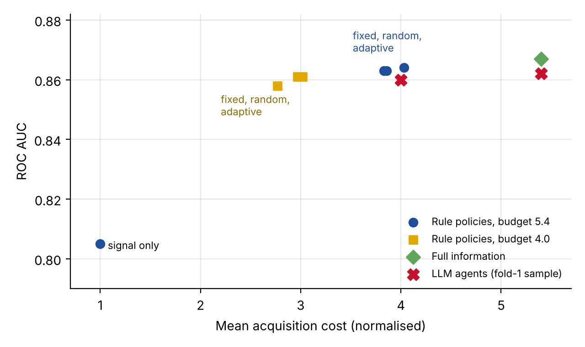

Experiment · Agentic AI · Cost-aware agents · Astronomy data
Told the price and told that stopping is free, small AI agents still bought every piece of evidence
ExoVet: when evidence costs money or time, does a small AI agent know when to stop looking?
By Muzammal Hussain · 20 November 2026 · Research update
NASA's Kepler telescope flagged thousands of possible planets, each a small dip in a star's light. Deciding whether a signal is a planet candidate or a false positive takes evidence, and some evidence is dearer to get than other. A good vetter looks at the cheap evidence first and stops as soon as the answer is clear. This experiment asks whether small AI agents do the same.
Key findings
- A simple stopping rule saves 29%. Buying all evidence gives ROC AUC 0.867 and balanced accuracy 0.799. Stopping once the classifier is 85% sure costs 3.83 instead of 5.4 on average, with the same balanced accuracy (difference −0.001 [−0.002, 0.000]).
- A clever order did not help. Choosing the next group by expected information per unit cost did no better than a fixed order, because one group, transit geometry, is clearly the most useful second step.
- The AI agents never stopped. qwen2.5:3b and llama3.1:8b bought every group in all 300 episodes, even when told that stopping is free and to buy only evidence that could change the label.
- Even when the answer was already clear. On 47 signals the label was settled after the first group; the agents kept buying.
- They spent more for nothing. On the same 300 signals the rule spent 4.33 for balanced accuracy 0.801; the agents spent 5.40 for 0.798.
Setup
The data are 5,323 Kepler objects of interest (KOIs) with the DR25 Supplemental disposition as the label. Every policy starts with four cheap signal metrics and may buy three more groups: transit geometry (cost 1.2), fit quality (1.4) and stellar context (1.8); the signal metrics cost 1.0, so everything costs 5.4. A fixed logistic-regression classifier gives the label, so policies differ only in what they buy. Cross-validation groups KOIs by host star, so no star appears in both training and test. The two LLM agents ran locally on 300 KOIs from one fold, at temperature 0, with the classifier's current probability and the costs in the prompt.

Results
| Policy | Mean cost (of 5.4) | ROC AUC |
|---|---|---|
| Signal metrics only | 1.00 | 0.805 |
| Buy everything | 5.40 | 0.867 |
| Stop at 85% confidence, adaptive order | 3.83 | 0.863 |
| Stop at 85% confidence, fixed order | 3.86 | 0.863 |
| LLM agents (300 KOIs, both prompts) | 5.40 | same as buying everything |
The rule stopped after the signal metrics alone for 1,332 KOIs (25%) and bought everything for 3,045 (57%). Under a tighter budget of 4.0, qwen2.5:3b asked for a group it could not afford in every episode.
What this means
Agents that call paid or slow tools, such as lab tests, database queries or API calls, treat the list of tools as a list of jobs to do. Telling them the price is not enough. The budget and the stopping rule should live in the code around the agent, and agent reports should give the cost of each decision next to its accuracy.
Limitations
The label is the catalogue's disposition, not confirmed planethood. The classifier is linear and uses catalogue features, not light curves, and the costs are set by us. Only two small models were tested, once each, on 300 KOIs; larger models or a prompt that shows the expected value of each group may behave differently.
Data: NASA Exoplanet Archive, Kepler Objects of Interest, DR25 Supplemental table.